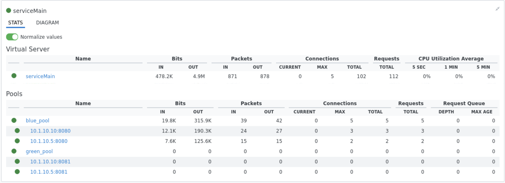
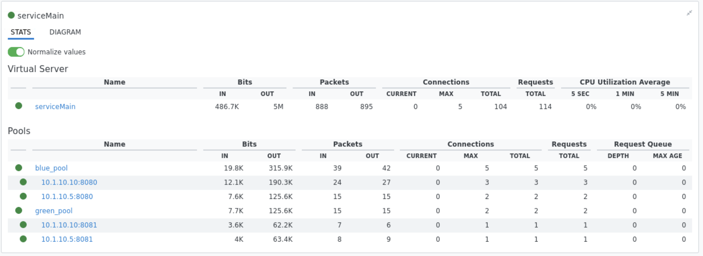

F5 and Hashicorp Basics > F5 Automation With Terraform > Lab 2 - Declarative BIG-IP Administration with AS3 Source |
Deploy Canary Test Policy¶
In this section you will simulate canary testing by associating a forwarding policy as part the previous json declaration. This policy will route canary traffic to an alternate pool when the specified uri condition is met.
Create app1b.json to simulate canary testing
touch app1b.json- use vscode to add the following code to app1b.json
{ "class": "AS3", "action": "deploy", "persist": true, "declaration": { "class": "ADC", "schemaVersion": "3.0.0", "id": "example-01", "label": "Tenant 1", "remark": "Simple HTTP application with round robin pool", "Common": { "class": "Tenant", "Shared": { "class": "Application", "template": "shared", "virt_addr_10_1_20_20": { "class": "Service_Address", "virtualAddress": "10.1.20.20" } } }, "tenant_01": { "class": "Tenant", "App_1": { "class": "Application", "template": "generic", "app1_vs": { "class": "Service_Generic", "virtualAddresses": [ {"use": "/Common/Shared/virt_addr_10_1_20_20"} ], "virtualPort": 3000, "pool": "web3000_pool", "profileHTTP": {"use": "http"} }, "web3000_pool": { "class": "Pool", "monitors": [ "http" ], "members": [ { "shareNodes": true, "servicePort": 3000, "serverAddresses": [ "10.1.10.5", "10.1.10.10" ] } ] } }, "App_2": { "class": "Application", "template": "http", "serviceMain": { "class": "Service_HTTP", "virtualAddresses": [ {"use": "/Common/Shared/virt_addr_10_1_20_20"} ], "virtualPort": 8080, "policyEndpoint": "forward_policy", "pool": "blue_pool", "persistenceMethods": [] }, "blue_pool": { "class": "Pool", "monitors": [ "http" ], "members": [{ "shareNodes":true, "servicePort": 8080, "serverAddresses": [ "10.1.10.5", "10.1.10.10" ] }] }, "green_pool": { "class": "Pool", "monitors": [ "http" ], "members": [{ "shareNodes":true, "servicePort": 80, "serverAddresses": [ "10.1.10.5", "10.1.10.10" ] }] }, "forward_policy": { "class": "Endpoint_Policy", "rules": [{ "name": "forward_to_pool", "conditions": [{ "type": "httpUri", "path": { "operand": "contains", "values": ["about"] } }], "actions": [{ "type": "forward", "event": "request", "select": { "pool": { "use": "green_pool" } } }] }] } } } } }
Modify main.tf to use app1b.json
- use vscode to replace app1a.json with app1b.json
resource "bigip_as3" "tenant01_app1" { as3_json = "${file("app1b.json")}" }
Redeploy App1 services with canary forwarding policy associated
terraform planterraform apply -auto-approve
Confirm BIG-IP is now configured with multiple apps
- Explore BIG-IP GUI Local Traffic -> Network Map to view app2 associated with blue and green pools
- Click on the expansion arrows next to serviceMain to view pool stats has 0 connections
- Test connections to serviceMain app running the following curl commands. All traffic should be served by blue pool
for i in {1..5} do curl -s http://10.1.20.20:8080/this | grep -o "172.17.0.." curl -s http://10.1.20.20:8080/is | grep -o "172.17.0.." curl -s http://10.1.20.20:8080/a | grep -o "172.17.0.." curl -s http://10.1.20.20:8080/canary | grep -o "172.17.0.." curl -s http://10.1.20.20:8080/test | grep -o "172.17.0.." done
- Test connections to serviceMain app running the following curl commands. All traffic should be served by green pool
for i in {1..5} do curl -s http://10.1.20.20:8080/about | grep -o "172.17.0.." curl -s http://10.1.20.20:8080/about | grep -o "172.17.0.." done
Note
The forwarding policy associated with serviceMain matches /about uri and directs to green pool.
Create app1c.json and associate irule.tcl to simulate blue/green deployment
touch app1c.json- use vscode to add the following code to app1c.json
{ "class": "AS3", "action": "deploy", "persist": true, "declaration": { "class": "ADC", "schemaVersion": "3.0.0", "id": "example-01", "label": "Tenant 1", "remark": "Simple HTTP application with round robin pool", "Common": { "class": "Tenant", "Shared": { "class": "Application", "template": "shared", "virt_addr_10_1_20_20": { "class": "Service_Address", "virtualAddress": "10.1.20.20" } } }, "tenant_01": { "class": "Tenant", "App_1": { "class": "Application", "template": "generic", "app1_vs": { "class": "Service_Generic", "virtualAddresses": [ {"use": "/Common/Shared/virt_addr_10_1_20_20"} ], "virtualPort": 3000, "pool": "web3000_pool", "profileHTTP": {"use": "http"} }, "web3000_pool": { "class": "Pool", "monitors": [ "http" ], "members": [ { "shareNodes": true, "servicePort": 3000, "serverAddresses": [ "10.1.10.5", "10.1.10.10" ] } ] } }, "App_2": { "class": "Application", "template": "http", "serviceMain": { "class": "Service_HTTP", "virtualAddresses": [ {"use": "/Common/Shared/virt_addr_10_1_20_20"} ], "virtualPort": 8080, "iRules": ["go_green"], "policyEndpoint": "forward_policy", "pool": "blue_pool", "persistenceMethods": [] }, "blue_pool": { "class": "Pool", "monitors": [ "http" ], "members": [{ "shareNodes":true, "servicePort": 8080, "serverAddresses": [ "10.1.10.5", "10.1.10.10" ] }] }, "green_pool": { "class": "Pool", "monitors": [ "http" ], "members": [{ "shareNodes":true, "servicePort": 8081, "serverAddresses": [ "10.1.10.5", "10.1.10.10" ] }] }, "go_green": { "class": "iRule", "iRule": "when CLIENT_ACCEPTED {\nif { rand() < 0.30 } {\n pool `*green_pool`\n }\n}" }, "forward_policy": { "class": "Endpoint_Policy", "rules": [{ "name": "forward_to_pool", "conditions": [{ "type": "httpUri", "path": { "operand": "contains", "values": ["about"] } }], "actions": [{ "type": "forward", "event": "request", "select": { "pool": { "use": "green_pool" } } }] }] } } } } }
Modify main.tf to use app1c.json
- use vscode to replace app1b.json with app1c.json
resource "bigip_as3" "tenant01_app1" { as3_json = "${file("app1c.json")}" }
Redeploy App1 services with irule.tcl associated
terraform planterraform apply -auto-approve
Confirm serviceMain is now assigned go_green irule.
- Explore BIG-IP GUI Local Traffic -> Pools -> Statistics to clear stats
- Test connections to serviceMain app running the following curl commands. Approx 30% of traffic will be directed to the green pool (172.17.0.5)
for i in {1..5} do curl -s http://10.1.20.20:8080/this | grep -o "172.17.0.." curl -s http://10.1.20.20:8080/is | grep -o "172.17.0.." curl -s http://10.1.20.20:8080/a | grep -o "172.17.0.." curl -s http://10.1.20.20:8080/canary | grep -o "172.17.0.." curl -s http://10.1.20.20:8080/test | grep -o "172.17.0.." done
Note
The go_green irule associated with serviceMain randomizes approximately 30% traffic to the green pool.
{kind=link}
{kind=link}
{kind=link}
{kind=link}
{kind=link}